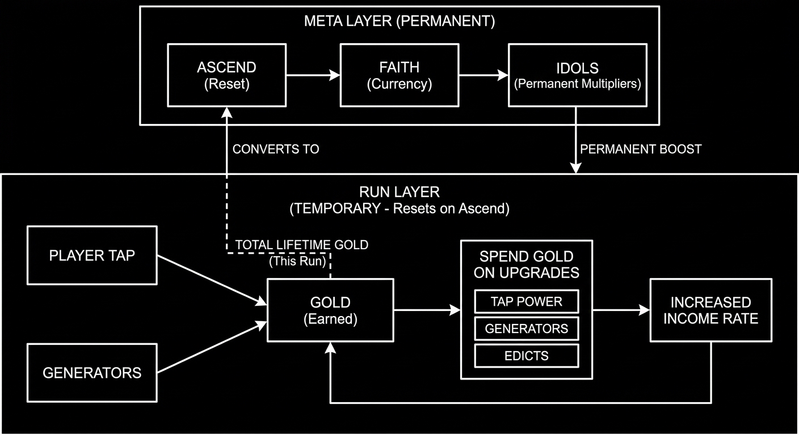
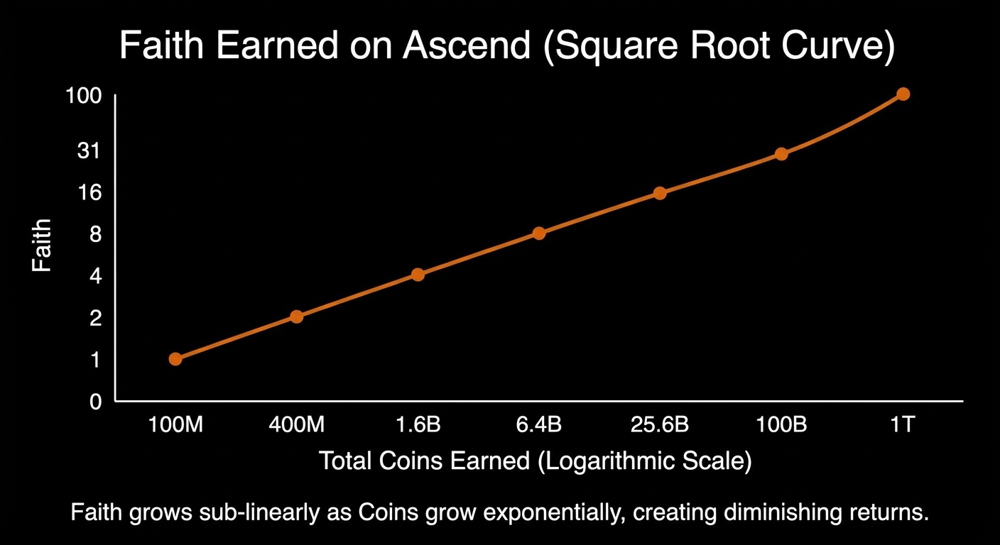
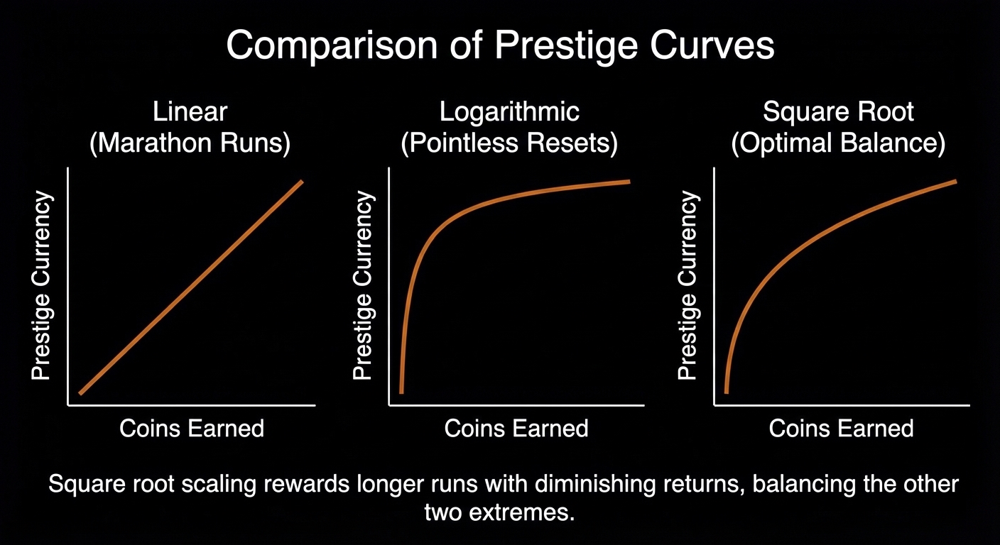
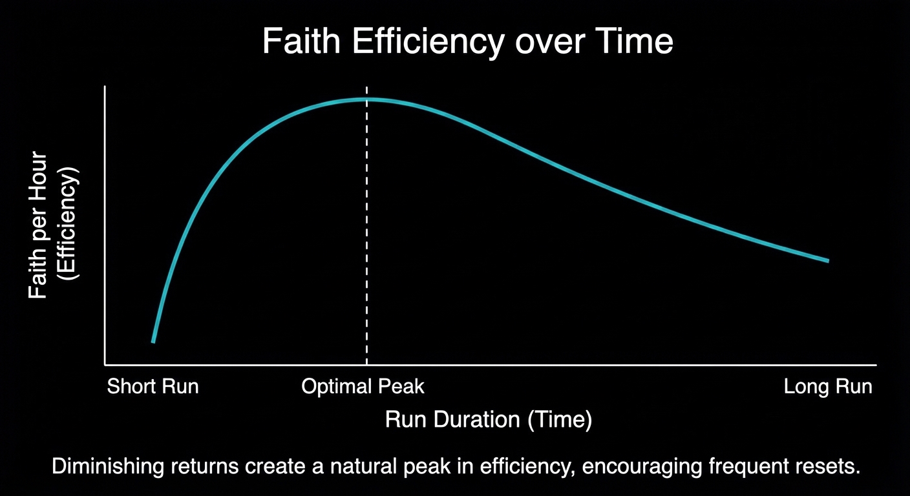

Cult of Coin
Prestige-Driven Idle Economy Systems Design Case Study
Executive Summary
Cult of Coin is a mobile idle game designed around a single core problem:
How do you make frequent resets feel optimal without making progress feel disposable?
The game uses a two-layer economy built to support short active sessions, long idle accumulation, and repeated prestige over time. Coins function as volatile run currency, while Faith represents permanent meta progression. This separation allows individual runs to grow aggressively while preserving a strong sense of long-term advancement.
Within a run, Coins grow exponentially through a generator-driven economy. Generator costs scale exponentially per purchase, while income scales linearly per unit and multiplicatively through global bonuses. This structure creates accelerating growth curves that feel increasingly powerful over time.
Prestige is driven by a square-root conversion of total Coins earned into Faith. This curve rewards longer runs while introducing diminishing returns, creating a natural peak in Faith-per-hour efficiency. Players are encouraged—but not forced—to reset at regular intervals. The math itself defines the game's cadence.
Screenshots


Design Goal
Cult of Coin is a mobile idle game built around a simple question:
Why should a player reset?
Idle games live in a strange space. If resets are too weak, players feel stupid for using them and end up sitting on one run forever. If resets are too strong, every run feels disposable and nothing ever feels earned. Both cases break long-term engagement, just in different ways.
My goal was to design a prestige system where resets are always the smart thing to do, but never feel like throwing progress away. Every run should push the player forward, even if it only lasts a few minutes.
The rhythm I was aiming for:
Log in → play actively for a few minutes → let it idle → come back later → reset → repeat
That loop is the heart of most successful idle games, but it only works if the economy quietly guides the player into it. In Cult of Coin, the entire progression system is tuned to make that cadence emerge naturally from the math, rather than being enforced through timers, energy systems, or daily quests.
Economy Structure
Cult of Coin uses a two-layer currency model designed to separate short-term progress from long-term growth:
- Coins are the run currency.
- Faith is the meta currency.
Coins are earned through tapping and passive generators and are fully wiped on prestige. Faith is only earned when the player resets and is spent on permanent upgrades called Idols.

This separation is what makes frequent resets viable. Coins are allowed to be volatile and fast-growing because they do not represent the player's real progress. Faith, on the other hand, grows slowly and persists across runs, giving the player a clear sense of long-term advancement even as individual runs are wiped away.
Generator Backbone
All idle income in Cult of Coin comes from generators. Generators are the primary driver of exponential growth within a run and are intentionally designed to overtake tapping as the dominant source of income after the early game.
Each generator purchase increases its cost exponentially:
This scaling rate was chosen to strike a balance between two competing needs:
- Costs must rise fast enough to prevent trivial infinite scaling within a single run
- Costs must rise slowly enough that players are almost always able to buy something
At 1.15, prices increase meaningfully every few purchases without producing hard stalls. Players regularly face decisions between buying another unit now or saving for the next tier, rather than waiting long periods with no meaningful actions.
Tier Efficiency
Higher tiers are more powerful but less efficient. This inefficiency gradient is intentional.
If higher tiers were both stronger and more efficient, the optimal strategy would always be to ignore earlier generators and save exclusively for the newest tier. That quickly collapses player choice and turns progression into a single solved path.
Instead, Cult of Coin creates a tension between:
- Buying efficient, lower-tier generators that scale well with multipliers
- Saving for higher-tier generators that dramatically raise CPS but offer diminishing returns per unit cost
As a result, players are encouraged to build horizontally and vertically at the same time. Lower tiers remain relevant throughout a run, while higher tiers act as power spikes rather than strict replacements.
The Faith Curve
Faith is awarded when the player ascends, based on the total amount of Coins earned during the current run:
This means Faith does not increase continuously during play. It is only calculated at the moment of prestige, using the full run's earned value.

This is a square-root curve. It rises fast early, then flattens:
- Coins grow exponentially.
- Faith grows sub-linearly.
That means longer runs always give more Faith, but less Faith per minute. This creates a natural peak in Faith/hour. That peak is what drives the game's reset rhythm.
Why Square Root Works
Choosing the prestige curve was one of the most important design decisions in Cult of Coin.

A linear prestige formula, where Faith scales directly with Coins, heavily rewards marathon runs. Waiting longer is almost always optimal, and players are incentivized to avoid resetting for as long as possible. This undermines the core rhythm of an idle game built around frequent resets.
A logarithmic prestige formula sits at the opposite extreme. While it strongly discourages long runs, it also flattens progression to the point where prestige rewards feel insignificant. The numbers move slowly, and resets begin to feel pointless rather than strategic.
Square root scaling sits between these two extremes. It rewards longer runs by always granting more Faith for more Coins, but it does so with diminishing returns. Each additional unit of Faith requires disproportionately more Coins than the last.

This balance is what makes frequent prestige optimal without making it mandatory. Players who reset at the efficiency peak gain the most long-term progress, but players who choose to push a run longer are still rewarded. The system guides behavior without hard rules.
The result is a prestige system that feels like a choice, not a chore.
Meta-Progression (Idols)
Faith is spent on six permanent upgrades called Idols. Each Idol boosts a different part of the economy, including generator output, tap power, global income, crit behavior, and Faith gain itself.
Idol costs scale exponentially:
This steep scaling ensures that Idol upgrades feel meaningful and long-term. Early levels are attainable quickly, while later levels require multiple runs and careful investment.
One Idol directly increases Faith gain. This creates compounding progression across runs:
More Faith earned per reset → more Idol upgrades → higher Coin generation → more Faith earned on the next reset
This feedback loop is the backbone of the game's long-term progression. Growth does not just happen within a single run; it accelerates across many runs as permanent multipliers stack.
Stability Systems
As multipliers stack, idle economies are at constant risk of collapsing into runaway builds where a single stat trivializes all other decisions. Cult of Coin uses soft caps to control this without invalidating player investment.
- Crit chance is capped at 50%. Any additional crit chance gained beyond that cap is converted into crit damage. This ensures that crit-focused builds remain viable while preventing guaranteed crits from overwhelming the economy.
- Cost reduction is capped at 20%. Any overflow beyond that point is redirected into other bonuses rather than being wasted. This prevents costs from approaching zero while still rewarding continued investment.
These caps are deliberately soft rather than hard. Players never hit a wall where an upgrade stops working entirely. Instead, excess value is redirected in a way that keeps the economy stable while preserving the feeling that every upgrade matters.
Player Behavior Over Time
The progression system is designed to gently guide the player through distinct behavioral phases as the economy scales:
- Early game: Play is active and click-driven. Tapping meaningfully contributes to income, upgrades are frequent, and the player is directly engaged with moment-to-moment actions.
- Mid-game: Generators begin to dominate income. Player focus shifts toward optimization: choosing which generators to buy, when to invest in Edicts, and whether to push efficiency or save for higher tiers.
- Late game: Attention moves almost entirely to prestige timing and Idol investment. The most important questions are no longer "What should I buy next?" but "When should I reset?" and "How should I invest my Faith?"
This shift from doing the work to managing the system is intentional. It mirrors the natural arc of many successful idle games, where player agency evolves from action to strategy. The math is tuned to support that transition organically, without explicit tutorials or forced milestones.
Why This System Holds Up
The progression system is built around opposing forces that keep the economy stable over time:
- Exponential run growth creates excitement. Numbers rise quickly, especially later in a run, and players are rewarded with a strong sense of momentum and payoff.
- Square-root prestige scaling introduces restraint. While longer runs always grant more Faith, the diminishing returns ensure that progress eventually slows from a meta-progression perspective, encouraging resets without forcing them.
- Steep meta-progression costs create long-term goals. Idol upgrades remain meaningful across dozens of runs, and players are never allowed to trivialize the system through a single early investment.
- Soft caps prevent collapse. Rather than hard limits that invalidate upgrades, overflow mechanics redirect excess value in a way that preserves both balance and player satisfaction.
None of these systems works in isolation. Each one pushes against the others. Exponential growth demands restraint. Prestige demands compounding. Compounding demands stability. That tension is intentional, and it is what allows the economy to remain engaging and readable across many resets.
The result is a progression system that supports short sessions, long-term play, and frequent iteration without breaking under its own weight.
Want to Talk Progression Design?
I enjoy digging into the math behind what makes games feel rewarding. If you're working on progression systems, idle mechanics, or long-term balance—I'd love to chat.
Contact Me